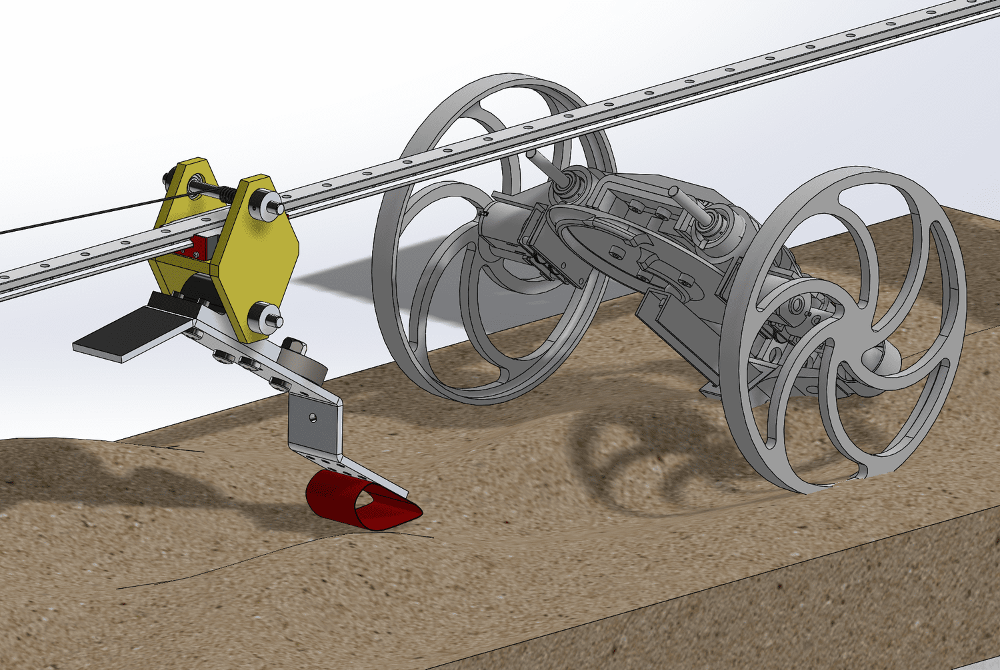
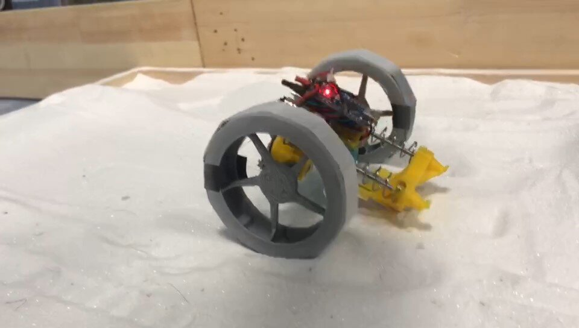
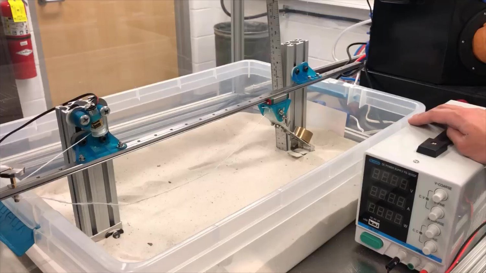

Float on the Sand

Figure 1. The jumping vehicle is on the right-hand side (greyed out). The test setup is on the left-hand side (rail + slider). The test subject is the red component that touches the sand.
The leg of my jumping vehicle (1st-12nd generation) always stuck into the sand. James from HKUST told me: to avoid stick into the sand, you should have the leg float on the sand. So, we had the jumping vehicle to wear a big paper shoe which increased contact area (Figure 1 & Video 1). However, as you can see in the video, after the paper shoes deformed plastically, the leg still stuck into the sand.

Video 1. The “paper shoes” is a white componet between two wheels. It didn’t last long, and eventually sank into the sand. Filmed in Aug. 2019 in Shanghai.
During ME551, I realized a flexible shoe may work. It should be both soft enough to adapt itself to different sand ground, and strong enough to deform without plastic deformation. Thus, an PETE origami design would be ideal.
Since I my jumping vehicles were not in Ann Arbor, I fast-prototyped a testing device (in above CAD, the shoe is the red componet). Flexible shoe did perform better. There was almost no trail under flexible shoes, which suggested less mechanical energy dissipation.

Video 2. Comparison between “rigid shoe” and “flexible shoe”. Filmed in Dec. 2019 in Ann Arbor
Acknowledgement:
Adviced by UMich Prof. Sridhar Kota.
Spaces, SLS 3D printers and mass weight provided by Prof. Sridhar Kota and Prof. Peter Washabaugh
Extrude aluminums and tools for sheet metal provided by Wilson Center.
Sand provided by the kind UMich Civil Engineering department.
Idea of “floating on sand” originated by James Mingzhi from HKUST.